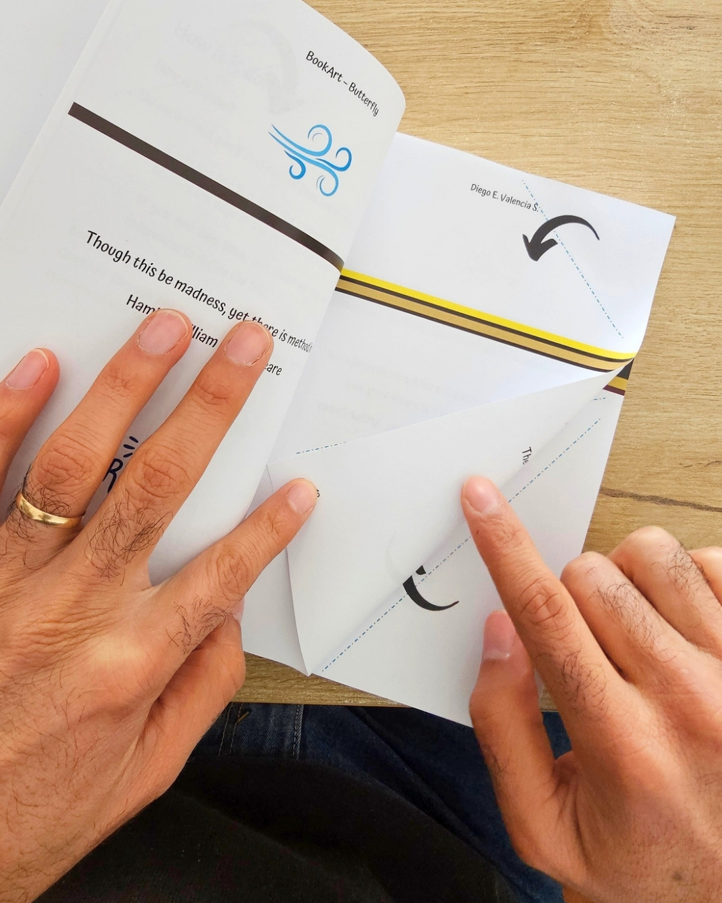

Everything about book folding — from what it is to how to pick the perfect design as a gift.

Book folding transforms an ordinary book into a three-dimensional sculpture by folding its pages in a precise pattern. Here's everything you need to know — and why BookArt makes it accessible to absolutely everyone, even with zero artistic background.
Read the guide →Valentine's Day, Mother's Day, birthdays, anniversaries — there's a sculpture for every moment. Here's how to choose.
Read → InspirationThe Wavy Heart is impossible to ignore. The Paw Print is quietly emotional. Here's how to think about which sculpture fits your space or your recipient.
Read → How it worksNo notifications. No screen. Just your hands and the paper. This is what the BookArt process feels like — and why so many people describe it as meditative.
Read →